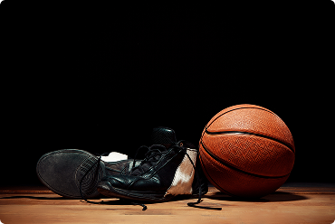

Sport Article

Basketball
Jake Will
04 June 2023
5 Exercises Basketball Players Should Be Using To Develop Strength
This article was written by Jake Willhoite from Healthlisted.com Strength in basketball isn’t all about a massive body mass or ripped muscles.